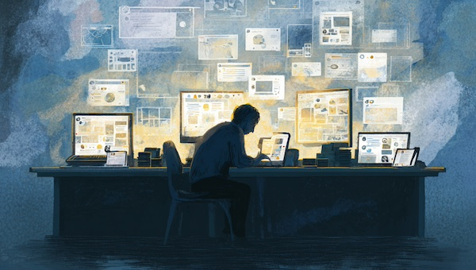

AI Ended Work: So why are we still doing so much of it?
Ten years ago we declared that work was dead: AI would run the world for us! And yet the world is more divided than ever, and civil unrest is on the horizon. So surely it's time to ask what happened to the paradise we were promised?

Ten years ago, the British economy hit a very predictable wall: AI was taking jobs faster than they could be replaced, and the trend didn’t look like it was slowing down. After record levels of insolvency and mortgage defaults, the banks approached the government for a solution. This time, however, they weren’t carrying a begging-bowl, they were carrying a hand-grenade that, for once, wasn't of their own making: if we don't fix this situation the economy will collapse, and the time-frame was months rather than years.
Initially, UBI (Universal Basic Income) was introduced, to some fanfare. However, a lack of time for any meaningful trials meant that its introduction was chaotic and ultimately unworkable. Within months, rates of alcoholism and violence - both on the streets and at home - made it clear that the system couldn’t continue. At the same time, key-workers were leaving in their droves so there was no state-infrastructure available to deal with the collapse.
The government reacted quickly and introduced the CCS (the Civil Credit Score), which had all the hallmarks of a workable solution: food and housing would be guaranteed, as would a small minimal wage; and to increase the wage you could fill those key-worker roles that were so badly needed: teachers, nurses, care-workers, mental health professionals, the police. Working at any job which required human intervention could increase your weekly CCS payments.
This, however, also proved unworkable: hospitals didn’t need three-thousand nurses arriving for a shift, and certainly not when the vast majority of them had no idea how to work with people or meet the medical needs of their patients. These weren’t trained carers, they were people from the hollowed out offices; they were lawyers, marketing professionals, coders. They were white collar workers with degrees and skills; they just weren't the kinds of skills that were needed anymore.
Then Kai Fassard stepped up with the final piece of the jigsaw and created the Creative Economy, as it was dubbed: a world where social interactions would earn you CCS Credits: Releasing an exercise regime that was Followed by thousands could triple your weekly payments; Sharing a recipe that people Liked could earn your dinner; releasing a video that went viral nationwide could clear your rent for the month. Surely this was the solution. A genuinely social rewards system that allowed society to reward those who, they felt, most deserved it.
Key workers had their bonuses guaranteed, and the rest of us would make the entertainment we needed to keep ourselves busy. What could possibly go wrong?
What went wrong with the CCS?
There were a number of clear problems from the start: gaming the system was a very profitable enterprise. You didn’t have to do the exercise or make the recipe, you just had to click Like, on the premise that others would reciprocate. As a result, Liking and being Liked became a national pastime.
We no longer spent time in offices doing work, our time was spent at home either creating content (which was, initially anyway, largely AI generated;) or Liking other’s content (whether we watched it or not - and it made more sense not to watch it as you were cutting into the time you could spend getting Likes and being Liked;) or we spent time monitoring the Likes we’d received, to ensure that everyone we’d Liked had actually Liked us back.
The system didn’t incentivise the creation of good quality content, it incentivised Likes and drew no distinctions between the two. We were rapidly becoming trapped in a culture that worked insane hours to produce nothing of value as people desperately tried to be Liked enough to pay their way. In theory, this was the future we’d all dreamt of; in practice it was the dystopia we’d all feared.
Pilot Steps In
We’d always known about Pilot, the dominant AI model that had been pieced together during the final days before the Crash. Its logic circuits were built out of elements of other major AIs - mostly the large American and Chinese ones - that Kai Fassard had stolen before China’s Final Firewall was raised, and the US descended into the chaos of civil war.
Though Pilot had always been present, and had previously worked in the manner that LLMs have done since the 20s, it was now tasked with the job of helping good content rise. It would reward quality content, while downgrading work that was seen as having either no social role, or work that might have a negative social impact. In this respect, it became the first and final arbitrator in the decision making process. What did society need? Pilot decided.
As a result, positivity became lucrative and negativity was to be avoided. On the most obvious level there were arguments that this punished anyone who questioned the state or its systems, though this wasn’t nearly as damaging as the move away from negative human emotions themselves. It was a world like 1984, except that dour misery was replaced by a superficial smile.
A Divided Society
The biggest issue, however, was that social stratification had just been given a shot of adrenaline that turned glass ceilings into concrete walls.
International trade, which wasn’t possible using CCS Credits, used only Coin; a cryptocurrency that was owned en-masse by the wealthiest. Though exchange between Credit and Coin was possible, most imports were out of reach for most people and once luxury goods and housing became only tradable in Coin the aristocracy was solidified.And the age-old question remained: what do you do with people who drop out of the system?
In this world, if your CCS score drops so low that you can no longer be considered a contributing member of society, you were moved into the Slums: huge estates where people were fed from soup kitchens and housed in damp, dilapidated rooms, often short of basic neccessitiies like electricity or the phones that were required to raise your CCS score. Over time, people have been moved here in their millions.
They are ghettos, where inescapable poverty lives and anger is beginning grow. They are a cancer where society’s shame is brushed to and forgotten about. They are a home to resentment and bitterness and there is a growing belief that there is no way out because the system was designed this way.
Society has not broken down yet but it is beginning to crack, and it is into this world that Phil was sent, with a mission to change the way we live...